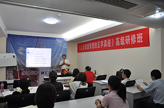

现代企业文化的共同特征
张九元老师
来源：中华龙集团教育培训中心 点击:126次
职业生涯：
38年的职业生涯是这样度过的：6年政府公务员，8年大型国企中层管理者，4年小型国企法人代表，3年高校理论研究者，17年咨询公司顾问。
原创课程文章
企业文化就是在企业建设和发展中逐步形成的行为规范、价值观念、道德风尚与时代精神的整合。建立具有中国特色的现代企业文化，不仅要学习和借鉴当代世界先进的管理经验和文化，而且要结合本国实际从传统优秀文化中汲取营养。当然，富有个性和特色的企业文化丝毫不排斥一切优秀企业文化所应具有的共同特征，这些特征表现为如下5个方面：
1、时代性
任何企业的生产经营活动都是在特定的社会、特定的时代进行的，企业文化的生成与发展，都必然要受到特定社会、特定时代的经济体制、政治体制、社会结构、文化、风俗等的制约，必然要打上它所处的那个特定社会的烙印，必然带有它们所处的那个特定时代的特征。当前，我国正在建立社会主义市场经济新秩序，经济体制、政治体制改革正日益深入，在这样的背景下建立的企业文化理所当然地带有改革开放，开拓进取的色彩，竞争、效益、改革、创新成为中国企业文化的主旋律。
2、服务性
创建企业文化的根本目的是为企业自身的繁荣与发展服务的，进而也为整个社会的经济发展服务。它包括：紧盯市场制定企业的发展战略；依靠科技进步振兴和发展企业；尊重知识、尊重人才；围绕着企业的生存和发展，做好人的工作，增强企业的凝聚力和战斗力；在企业进步中促进人的全面解放，调动企业员工的积极性、主动性和创造性；全面而活泼地开展企业文化娱乐活动，促进企业员工的身心健康，使企业员工心情舒畅地做好自己的本职工作。
3、凝聚性
企业无论其历史长短，都需要企业内部员工的精诚团结，密切合作，形成一体化。而企业文化恰恰可以通过共同形成的价值观、行为规范、工作氛围和奋斗目标来增强企业的凝聚力。它像一条无形的纽带把企业员工的个人追求和生活目的与整个企业的发展目标趋于一致，使分散的力量团结为一个整体。企业文化的凝聚性一方面可以通过企业在外部的成功而得到体现，但更重要的则是企业遇到暂时困难和挫折的时候，全厂上下能够万众一心、同舟共济、共渡难关。试想，如果一个企业人心涣散、离心离德，那么这个企业就不会有生机和活力。
4、激励性
激励是文化本身就有的一种特性，企业文化更是如此。市场经济运行的实践证明，企业员工工作的动力和积极性不仅来自于工资、奖金等物质利益，而且来自于精神鼓励。企业文化可以最大限度地提供给员工情感、自尊、归属感等心理所需，培育企业员工人员的效益意识、全局观念和忠诚、勤奋等精神，从而激励企业员工心甘情愿地为企业做出奉献。在具有浓郁个性特色的企业文化中，如果企业的所有工作人员都具有公而无私的献身精神，那么企业与员工的关系就很容易得到公正合理的解决。
5、约束性
企业文化的约束性主要是通过三方面来体现的：一是各项规章制度的约束作用。规章制度是企业员工共同制定的，因而必须共同遵守，但规章制度的作用并非以压制员工的积极性和创造性为代价，而是为了使员工的聪明才智最大限度地发挥出来。二是职业道德的约束作用。职业道德是人们在长期工作中共同形成的，具有职业特点的行为规范，企业的每一位员工都应该接受职业道德的约束，例如，工业企业要有社会责任感，确保产品质量；商业企业员工必须讲究文明经商，公平买卖，礼貌待客等。三是社会公德的约束作用。企业行为是与社会各方面密切相连的，因此企业的每一位成员还应该遵守社会公德，这样才有利于企业及员工个人的全面发展与进步。
企业文化作为一种新的管理理论，是一个融合经济和文化意义的新概念。尽管国际国内对此有多种解释，但其基本含义是确定的，即指一个企业在自己的历史发展中，在长期的生产、建设、经营、管理实践中逐步形成的、占主导地位的、并为全体员工认同和恪守的价值观念和行为准则。而作为一种实践，越来越多地为企业所接受，并且日益带来更多的实际收益。
企业文化反映着一个企业特有的，为社会所公认的品格、素质、精神、作风以及公众形象等文化积淀，对于企业以至社会发展产生一定文化的影响和作用。正如原中国企业联合会会长袁宝华先生指出的：“企业文化是在一定的社会制度，生产力水平和文化背景下形成的，不同的企业在各自的实践中，逐步培育成的企业文化，是本企业员工信念、意志、道德、风格、行为准则等的综合体现，并且是员工群体意识。它具有鲜明的民族性、时代性和本企业的个性。它对企业广大员工具有强大的感召力、引导力和约束力，它能够增强员工对企业的信任感、自豪感和荣誉感，也能增强企业对员工的向心力和凝聚力。而这种意识一旦与企业的物质建设相结合，就会产生强大的生产力。因此，我们说，企业文化也是企业的无形资产。”这段论述，精准地指出了企业文化建设的关键作用。
企业文化建设已经成为中国企业发展的主要推动力，企业管理者对企业文化建设的认识也在日益加深。但是由于企业文化的概念最初源自发达国家，也就给中国企业带来了很多的误会。不少企业把企业文化建设肤浅化、表面化，也有的企业把企业文化建设视为畏途，致使企业文化建设不能健康发展。
在这里，特别要指出的是：企业文化的建设并不是一蹴而就的，她必须经过全体员工长时间的一致努力才能够建成。并且要经过强制——习惯——文化的过程。因此，我们在企业文化建设中一定要循序渐进，扎实推进，才能建成有真正实际意义的企业文化，从而推动企业朝着既定的目标前进。